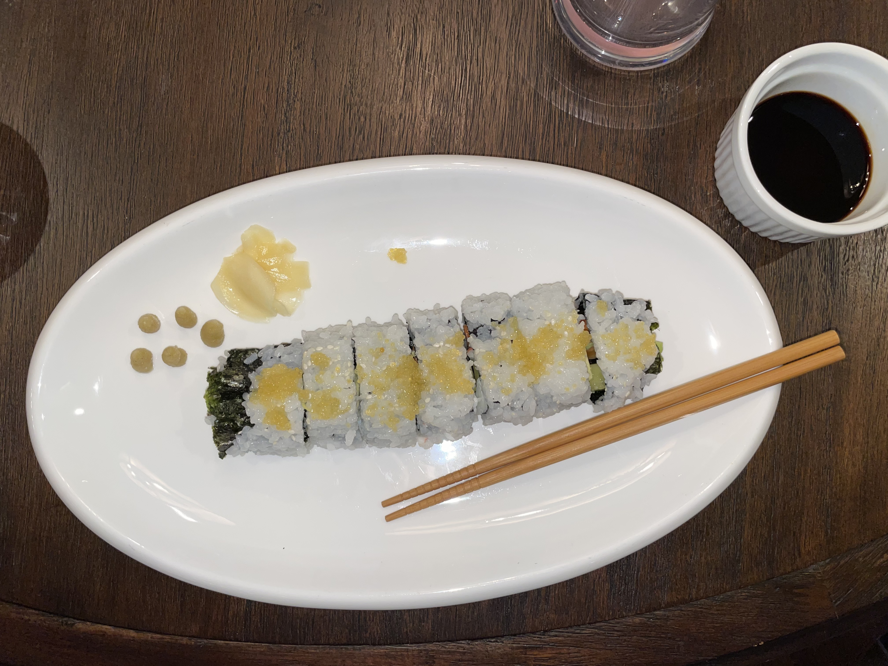

Tips
- The most important tip! Always taste your food as you go. This helps prevent any overly seasoned food.
- Make sure you have all of the ingredients required for you recipe before cooking, or you could end up with a cereal but no milk situation.
- Wash your hands each time you are touching meat, especially poultry.
- When cooking meat, periodically check the inside with either a meat thermometer or slightly cut into the middle.
- I tend to prefer avocado oil when cooking vegetables and extra virgin olive oil when cooking meats.
- Wash all of your fruits and vegetables before using!
- Lastly, don't be afraid to try new things!
